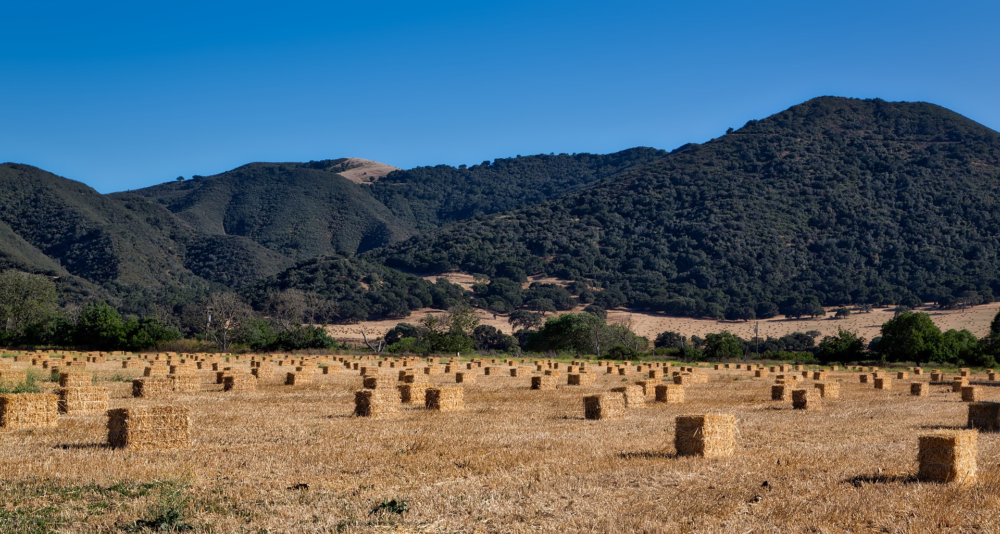
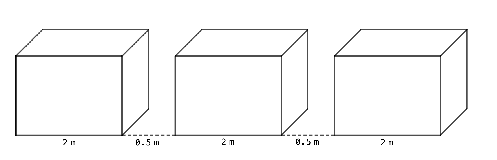

Problem of the Week
Problem B and Solution
Farmer Mac’s Bales

Problem
Farmer Mac’s hay bales are in the shape of rectangular prisms. Each hay bale is 2 m long by 2 m wide by 1.5 m high. The hay bales lie in rows in a field with one of the square sides of each hay bale on the ground and the rectangular sides of the hay bales facing each other. Farmer Mac leaves a 50 cm space between each hay bale.
Determine the length of row of 20 hay bales.
What is the total area, in m\(^2\), of the ground underneath the 20 hay bales?
Solution
We will look at two ways to determine the length of a row of 20 hay bales.
The first way is by using a table.
The diagram below illustrates the first three bales, with 0.5 m between them (since 50 cm = 0.5 m).

The first bale is 2 m long, and each new bale after adds \(2 + 0.5 = 2.5\) m to the length. We will show this in the following table.
| bales | length |
|---|---|
| 1 | 2 |
| 2 | 4.5 |
| 3 | 7 |
| 4 | 9.5 |
| 5 | 12 |
| 6 | 14.5 |
| 7 | 17 |
| 8 | 19.5 |
| 9 | 22 |
| 10 | 24.5 |
| 11 | 27 |
| 12 | 29.5 |
| 13 | 32 |
| 14 | 34.5 |
| 15 | 37 |
| 16 | 39.5 |
| 17 | 42 |
| 18 | 44.5 |
| 19 | 47 |
| 20 | 49.5 |
Therefore, the length of a row with 20 hay bales is 49.5 m.
The second way we will find the length of a row with 20 bales is by setting up an algebraic expression.
If we let \(b\) represent the number of bales and \(s\) represent the number of spaces, then an algebraic expression for the length of a row of bales, in m, is \[2 \times b + 0.5 \times s\]
Now, when there are 20 bales and 19 spaces the length becomes: \[\begin{aligned} 2 \times 20 + 0.5 \times 19 &= 40 + 9.5 \\ &= 49.5 \end{aligned}\]
Therefore, the length of a row with 20 hay bales is 49.5 m.
The base of each hay bale is 2 m by 2 m.
So the area under each hay bale is \(2 \times 2 = 4 \text{ m}^2\).
There are 20 hay bales in the row, so the total area of the ground underneath the 20 hay bales is \(20 \times 4 = 80 \text{ m}^2\).